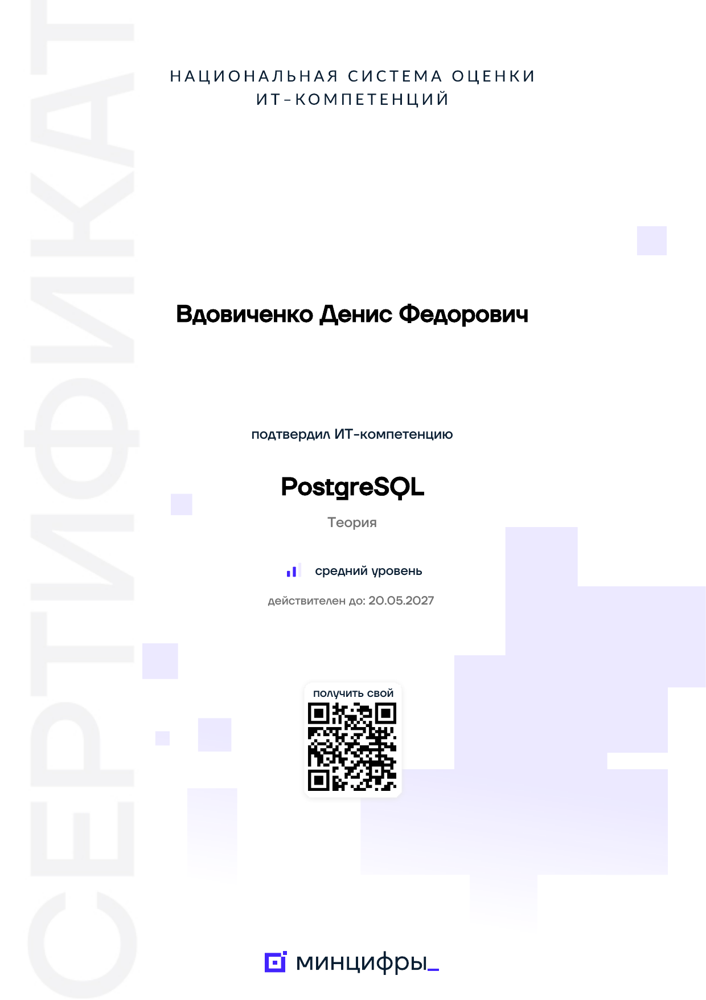
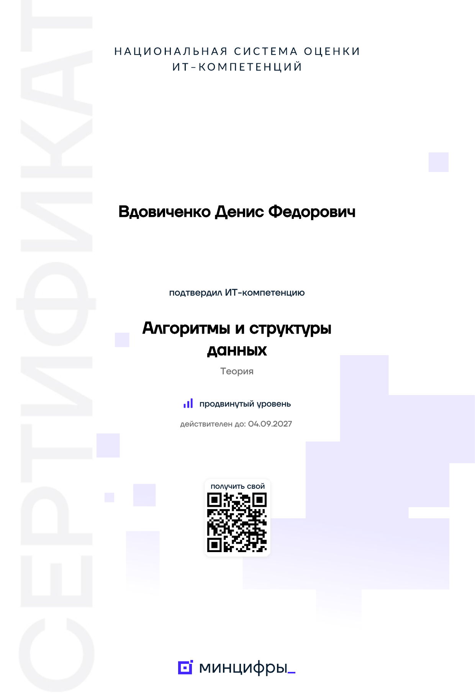
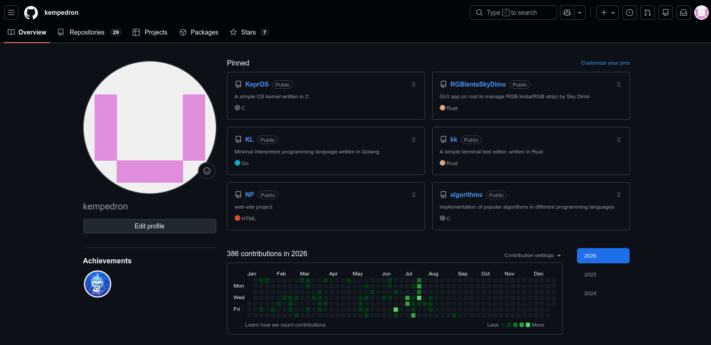
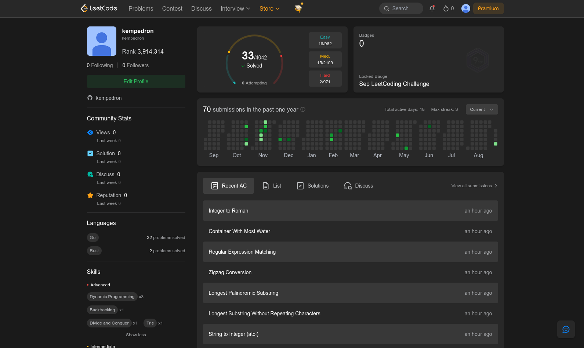

Вдовиченко
Денис Федорович
Backend и системное программирование. Go, C, Rust — от сетевых сервисов до низкоуровневых систем.
Обо мне
Студент, изучаю backend и системное программирование. На GitHub — 13 репозиториев на Go, C и Rust: минимальное ядро ОС, интерпретируемый язык программирования, терминальный текстовый редактор, приложение для управления RGB-подсветкой и несколько веб-проектов.
Go
Бэкенд, микросервисы, CLI-инструменты, BitTorrent-клиент
C / Assembly
Ядро ОС, HTTP-сервер, сетевые библиотеки, драйверы
Rust
Терминальные редакторы, GUI-приложения, системное ПО
Systems
ОС-ядра, файловые системы, протоколы, низкоуровневая оптимизация
AI / ML
AI-агенты, LLM-интеграции, развертывание ML-пайплайнов
DevOps
Docker, CI/CD, Linux, автоматизация инфраструктуры
Проекты
Наиболее значимые проекты из моего GitHub
KeprOS
Минимальное 32-битное x86 ядро ОС на C и Assembly. Multiboot-загрузчик, VGA Text Mode, PS/2 клавиатура, ATA PATA драйвер, RAM и дисковая ФС, интерактивный shell.
gorrent
Битторрент-клиент на Go с TUI-интерфейсом. Реализует сетевой стек протокола BitTorrent, парсинг .torrent-файлов, скачивание и раздачу файлов.
net.c
HTTP/1.1 серверная библиотека на чистом C без внешних зависимостей. Сокеты, парсер HTTP, роутер, MIME-типы, cookies, статические файлы.
KL Language
Минималистичный интерпретируемый язык программирования на Go. Лексер, парсер, AST, типы, функции, ввод-вывод, арифметика.
kk — Text Editor
Минималистичный терминальный текстовый редактор на Rust с файловым менеджером, подсветкой синтаксиса и поддержкой Unicode.
fishmanAI
AI-платформа с TypeScript-бэкендом, Flutter-мобильным приложением, веб-интерфейсом и Docker-оркестрацией. 46 коммитов.
qBroker
HTTP-брокер очередей на Go. In-memory очередь с long-polling, REST API для push/pop сообщений.
RGBlentaSkyDimo
GUI-приложение на Rust для управления RGB-лентой Sky Dimo. Низкоуровневое взаимодействие с оборудованием.
Сертификаты
Подтверждение квалификации от Минцифры и TrueCerts


Активность

